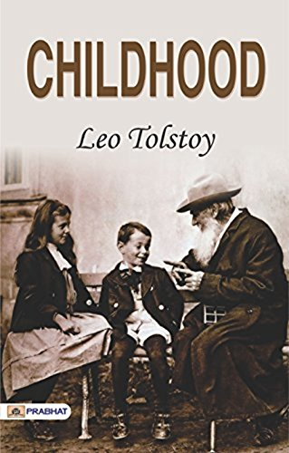
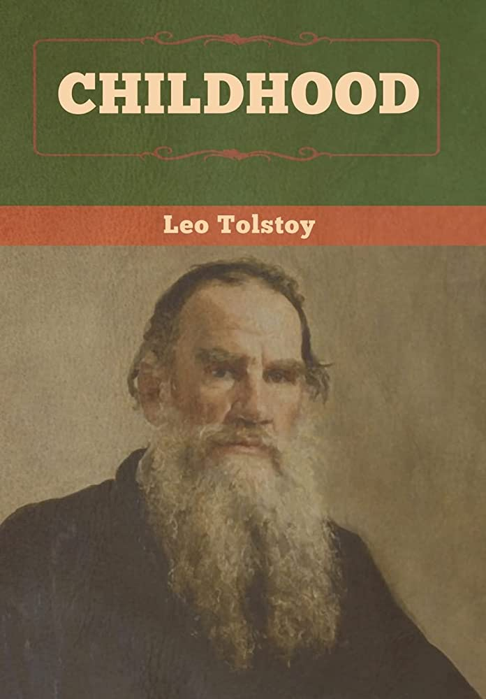
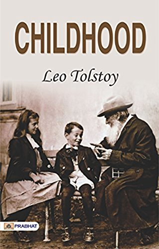
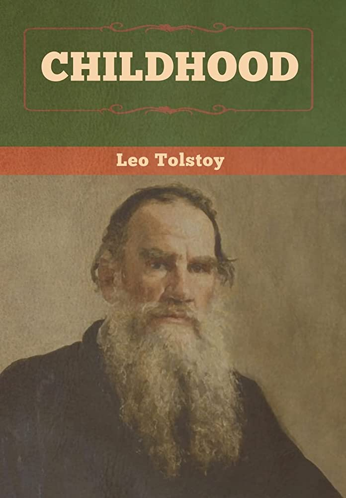

Book Price
$35.00
Childhood
"Childhood" is a novel by Leo Tolstoy that was published in 1852
in a semi-autobiographical trilogy that includes "Childhood,"
"Boyhood," and "Youth," which are often referred to collectively
as "The Childhood Trilogy". It tells the story of a young boy named
Nikolai Irtenev, who is the main protagonist of the novel.
The story is set in the 19th century in rural Russia and is
narrated from Nikolai's perspective as he reflects on his early
years.
The novel "Childhood" vividly portrays the world as seen through
the eyes of a child. Tolstoy artfully captures the innocent and
impressionable mind of a young boy, depicting his observations,
experiences, and emotions in a poetic and introspective manner.
Nikolai's childhood is marked by a sense of wonder, curiosity,
and imagination, as he navigates the complexities of family,
relationships, and society.
Throughout the novel, Tolstoy delves into the inner world of
Nikolai, revealing his thoughts, dreams, and aspirations.
He depicts Nikolai's relationships with his family, including
his loving but troubled mother, his strict and distant father,
and his beloved aunt. Tolstoy also portrays Nikolai's interactions
with other children, his first experiences of friendship,
and his encounters with the social norms and expectations of
his time.
As Nikolai grows older, he begins to grapple with questions of
morality, faith, and the meaning of life. He confronts challenges,
confrontations, and losses that shape his worldview and
lead him to question the established norms and beliefs of his society.
"Childhood" is a poignant exploration of the formative years of a
young boy's life, capturing the joys, sorrows, and complexities
of growing up and coming to terms with the realities of the world.
Tolstoy's "Childhood" is often praised for its lyrical prose,
vivid imagery, and psychological insights into the inner world
of a child. It is considered a classic of Russian literature and
is regarded as one of Tolstoy's early masterpieces, showcasing
his literary talent and his ability to capture the human condition
with profound depth and sensitivity.